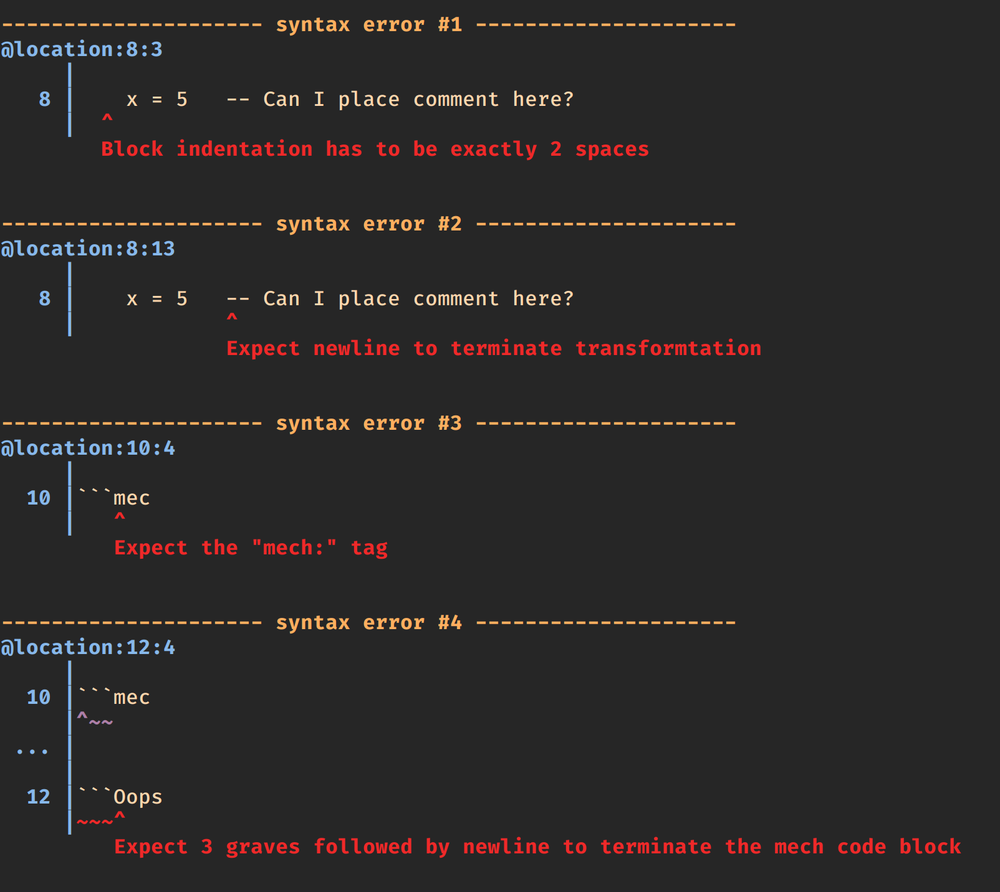
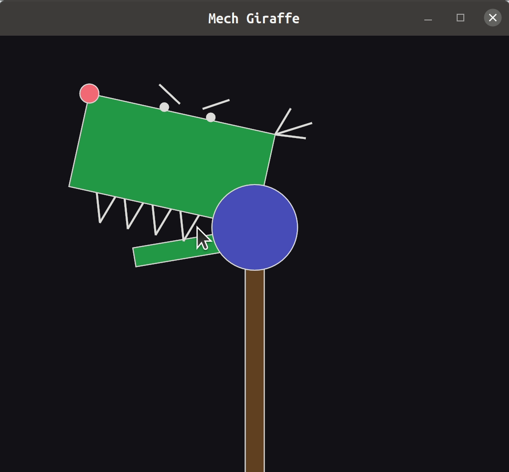

Fall has officially arrived, so it's time for another quarterly update for the Mech language. When we last updated this blog in May, most of the work at the time focused on adding long-awaited features such as units, executables, and performance improvements. The summer was devoted to extending some of these features, as well as filling in a lot of the gaps in the platform. Let's take a look!
A significant change in Mech this summer was the introduction of user-defined functions. Initially, I was hesitant to include them, wanting to explore the language's potential without them. Although asynchronous blocks may often replace user-defined functions, their inclusion benefits new learners familiar with function calls in other languages. This compromise makes Mech more approachable.
Mech functions differ from blocks due to their idempotency, meaning they're pure mappings from input to output without side channels. Functions in Mech can only operate on input arguments and cannot access global tables or manipulate them. They also can't use set operators, append operators, or temporal operators. Functions can't interact with machine-related tables either, but they can call other Mech functions.
A Mech function is defined as follows:
x f32 add-two y f32 x = y + 2The brackets contain variables defined in the function body, which represent the function's output. Mech functions can output multiple tables as needed. Example:
x f32 z f32 add-mul-two y f32 x = y + 2 z = y * 2After the output list is the function name and an input argument list. The body of the function must define the output argument, or a compiler error will occur. If an input is unused in the body, a compiler warning alerts the programmer.
To call the function:
x = add-two( y 10 )Dynamic dispatch is crucial in Mech, so function definition overloading allows users to define multiple functions with the same name but different parameters. For instance:
x u64 add-two y u64 x = y + 2Now add-two() can be called with both u64 and f32 types. However, this requires duplication for every numeric type. A future "typeclasses" feature may enable a single function definition for all supported numeric types, but for now, duplication is necessary.
For a long time Mech has aspired to compete with Matlab when it comes to manipulating matricies. We've had broadcast semantics on vectors and tables for a while, but now we've finally gotten bonefide matrix operators in Mech that even go beyond what Matlab has to offer.
We've implemented matrix multiplication using the built-in ** operator. For example, multiplying two matrices can be done like this:
#x = matrix/multiply([ 1 2 3 4 ], [ 5 6 7 8 ])The operation follows the rule that the number of rows in the left-hand opernd must equal the number of columns in the right-hand side operand. Currently, it only works for f32 kind matrices.
The reason we've opted for a unique operator ** instead of the Matlab style single * is that in Mech, the single * is already a broadcast operator, whereas Matlab uses .* to broadcast the multiply operator.
Transposing tables is accomplished with the apostrophe operator:
#y = [ 1 2 3 ]Matlab users will be familiar with this operator. However, it currently only works for tables of a uniform kind; after evaluating a transpose, column names are lost. Implementing named rows may be a future solution.
Swizzling, a term from the computer graphics world, allows composing vectors by rearranging and combining components of other vectors. Mech's typed columns enable swizzling to help write concise code in combination with broadcast and matrix operators. Here's an example:
x = [a: 1 , b: 2 , c: 3 , d: 4 ] #z = x accHaocheng Gao has made significant progress in making Mech's error messages more readable. While the previous update addressed semantic compile-time errors, it was still challenging for new users who frequently encounter syntax errors.
Now, Haocheng has revamped the parser to generate detailed error messages that inform users about the error type, its location in the source file, and possibly offer hints for fixing it. Here's an example of the improved error messages:

Haocheng has tagged various parser combinators to generate relevant and informative messages that are rendered contextually, whether in an editor, console, or browser.
> Mech's parser now produces helpful error messages and makes an effort to recover from common errors. Previously, it only provided a generic error message for invalid inputs. With the new extensions, the parser can display the source code portion containing the error and guide users to identify and fix the issue with annotations and well-crafted error messages.
> This enhancement is part of our ongoing efforts to improve user experience for the upcoming Fall 2022 release. As a Mech learner, I initially struggled with syntax errors due to Mech's unique grammar compared to traditional imperative languages like C and Java, and there was no guidance on correcting my mistakes. I hope our new feature will prevent such difficulties for future learners.
In numerous programs, we can analyze table shapes statically and determine the size of dependent tables at compile time. However, sometimes table shapes depend on variables that might change. Dynamic tables come into play when table sizes need to adapt during runtime. Two common scenarios involving dynamic tables are appending new elements to a table and filtering a table using logical indexing.
The table append operator ( += ) allows a table to grow dynamically during runtime. For instance, consider a program that accumulates data from a sensor:
#acumulated-data += #sensor.dataAs the #sensor table updates, the latest data reading is appended to the #acumulated-data table, which means it will grow unbounded. Since Mech tables are backed by Rust vectors, reallocations will happen in the same way. Discuss how they happen in rust.
When filtering a table using logical indexing, the resulting table's size depends on how many rows in the logical index variable are true. For example, consider a table of students and their test scores:
ix = #students.score > #threshold #passed-students = #students{ix}In this case, the #passed-students table contains only the students with scores higher than #threshold . The size of this resulting table is determined during runtime, as it depends on the number of students meeting the specified condition, which can both be dynamic. Therefore the size of #passed-students can't be determiend at compile time.
Dynamic tables can impact performance due to memory reallocations and the inability to optimize table sizes at compile time. Memory reallocations can be expensive if they occur frequently. Additionally, dynamic table sizes make it challenging to apply certain optimizations that rely on fixed-size data structures.
However, since tables are implemented using Rust vectors helps mitigate these performance concerns. Rust's exponential growth strategy for vector capacities minimizes the number of reallocations required, and the language's safety features reduce the likelihood of memory-related bugs.
The table split operator ( >- ) converts a vector into a vector of vectors, which is particularly useful when combined with table interpolation. For instance, splitting a column of numbers can be done as follows:
x = [ 1 2 3 4 ] y >- x div = [kind: div , contents: y]The result is y = [[1]; [2]; [3]; [4]], and the div will contain:
This functionality has been available for some time. However, the new flatten operator ( -< ) allows us to revert the split vector back to its original form. Here's an example:
xdiv.contentsThe evaluation results in x = [1; 2; 3; 4], which is the original vector.
We have introduced a set of update operators to streamline syntax, compiled block code, and memory usage. These operators perform a mathematical operation on a table and update it in place, eliminating the need for an intermediate table. This saves space, time, and lines of code. The update operators are :+= , :-= , :*= , :/= , :^= , and :**= , each corresponding to their respective mathematical operator.
For example:
old x := x + 5 new x 5These new operators have the potential to significantly simplify the syntax. Consider the pose update code from the bouncing balls demo:
#balls.x := #balls.x + #balls.vx * #dt #balls.y := #balls.y + #balls.vy * #dtWith the update operator and table swizzling, this can be condensed into a single line of code:
#balls xy #balls vxvy * #dtThis example demonstrates how update operators can make code more concise and efficient, while also reducing the need for intermediate tables.
We have been concerned about the use of hashtags for header and subheader syntax, as it follows the Markdown convention but could potentially conflict with Mech's global table select operator. To eliminate this potential confusion, we have decided to adopt the alternative Markdown header syntax, which uses an underline of = or - to indicate headers and subheaders, respectively. The new syntax looks like this:
Title=======Section Title---------------
This document's source and the various examples in the Mech examples directory demonstrate the new syntax. By adopting this alternative syntax, we aim to make the Mech language more intuitive and user-friendly, minimizing confusion between different syntax elements.
We identified inefficiencies within the parsing module, specifically the use of String types instead of &str types. By transitioning to &str, we achieved a remarkable 100-fold increase in parser speed. This improvement highlights the elimination of numerous unneeded allocations, leading to a significant performance boost for the Mech language parser!
We've achieved a significant reduction in the size of machine binaries, decreasing them by an order of magnitude (from 8MB to 800KB). This improvement was accomplished in two ways:
First, we eliminated redundant code in the dependent repositories. Machines typically depend on core and utilities. The core dependency includes rayon and the entire standard machine, which often go unused in machine implementations. These are now behind feature flags in core. Similarly, utilities has a type definition using a websocket, which depends on tokio. Importing all of tokio for a machine consumed considerable space, so this is now behind a feature flag as well. Removing this unused code accounts for most of the space savings in binaries.
Second, after compiling the binary, we utilized the UPX executable packer to further reduce the machine size (approximately a 50% savings over the regular compiled file).
While we believe there's potential for even greater savings, considering a lot of the code included in these binaries is available in the Mech executable, a long-term task would be to remove this code from the compiled machine and link it to the Mech executable. In the meantime, a 10x reduction is a substantial improvement.
Introducing the new matrix machine, which offers a range of linear algebra-related functions. By default, matrix/multiply and matrix/transpose are included in the standard machine and made available to programmers through built-in operators. The matrix machine wraps several functions from the Rust nalgebra crate, allowing seamless integration with Mech. This addition enriches Mech's capabilities and provides users with a powerful set of tools for linear algebra operations.
The gui machine incorporates various tables that aid in rendering native interface elements. It primarily utilizes the Rust egui framework, along with custom wrappers that make the elements reactive. Previously, the gui machine was a part of the notebook2 (now simply notebook), but we have since extracted most of its code into a separate machine. As a result, the remaining notebook code is now predominantly implemented using Mech, streamlining the overall organization and functionality.
Haocheng was able to extend the library features enough to be able to draw this angry giraffe:

Similar to the gui machine, the html machine was previously integrated within the wasm repository. Its primary functions are drawing to canvas and rendering HTML elements. Now, all of the relevant code has been moved into its own separate machine, which has become a dependency of wasm. This change not only improves the code organization but also paves the way for easier maintenance and further development of both the html machine and the wasm repository.
Mech GUI applications are packaged using the gui crate. This works by having Mech initiate an egui desktop engine and employ one or more Mech cores to update the GUI display in a loop, following a loaded Mech program that defines the App's behavior. However, this design has a limitation as the GUI executable is not self-contained - either a .mec file needs to be separate from the executable or the Mech program has to be included as a string constant within the executable, requiring recompilation each time the Mech program is modified.
To address this issue, the CSE Capstone group has developed a prototype executable builder that enables the creation of a self-contained GUI executable from any .mec file. This solution streamlines the process, allowing for more efficient and user-friendly development of Mech GUI applications.
The previously archived notebook repository has been revived, now hosting the contents of what used to be notebook2. The original notebook has been renamed to wasm-notebook. The primary distinction between these two repositories is their underlying GUI frameworks. The notebook (previously known as notebook2) utilizes the egui Rust GUI framework, while wasm-notebook (previously called notebook) relies on the Rust websys framework. This renaming and reorganization clarify the differences between the two repositories and make it easier for users to choose the appropriate solution based on their preferred GUI framework.
A little confusing, but we can move past that.
During the spring, the Mech project repositories were converted into git submodules of the main Mech repo. Recently, several of these git submodules have been relocated to the src directory, and some folder names have been changed. These adjustments aim to streamline the repo's structure, making it cleaner and more user-friendly for developers working on the runtime.
The documentation for Mech is being restructured to improve organization and accessibility. The new layout will be divided into the following categories:
Getting Started - Welcome, Install, Running, Quickstart, Help
Reference - Core Language, Writing Programs, Design Documents
Machines - Standard Machine References
Guides - Mech-for-X, Tutorials, How-tos
Although the formatting has been updated and the sections outlined, there is still considerable work to be done in these areas. The completion of the documentation is a crucial step before the beta release can be launched.
The feedback from the IROS submission highlighted the need for a more representative example program to showcase Mech's capabilities. To address this concern, an Extended Kalman Filter (EKF) localization algorithm was implemented in Mech. You can find the example in the repository here. The addition of built-in matrix operators made this possible.
Some interesting aspects of this example include:
Unicode support is demonstrated through the use of Greek symbols as variable names.
The Mech implementation of the EKF algorithm is roughly 20 lines of code, which is similar in length to the algorithm expressed in mathematical notation.
The implementation process was straightforward and closely followed the source algorithm, resulting in a smooth and successful execution.
Moreover, a significant finding from this example is that Mech demonstrates a much faster performance than Matlab. With an EKF localization algorithm implemented in both languages, a direct comparison was made, and Mech significantly outperformed Matlab.
Each machine now includes an index file (written in Mech) that explains the purpose and contents of the machine. It will act as a table of contents for the machine, as well as the first page of documentation. A sample abriged index looks like this:
math=====1. Description---------------Provides standard mathematical functions.2. Provided Functions----------------------- math/sin(angle)- math/sin(angle)3. Info--------#math/machine = [ name: "math" version: "v0.1.0" authors: ["Corey Montella", "Haocheng Gao"] machine-url: "https://gitlab.com/mech-lang/machines/math" license: "Apache-2.0"]
You can find the full index [here](https://github.com/mech-machines/math/blob/main/index.mec)
On June 13, I had the opportunity to present Mech at the PLDI ARRAY Workshop in San Diego, California, USA. The presentation was an extended version of the 10-minute talk I gave for HYTRADBOI, allowing me to delve deeper into the subject matter and showcase more of Mech's features.
With over twice the amount of time to speak, I was able to provide a more comprehensive overview of Mech, its capabilities, and the problems it aims to solve. Additionally, the longer format allowed me to conduct a live demo, demonstrating some of Mech's unique features and functionality.
Unfortunately, there is no recording of the talk available. However, if you're interested in the content of the presentation, you can refer to the aforementioned HYTRADBOI talk, which covers similar topics and provides a good overview of Mech's capabilities.
Forward Robotics is the outreach component of the Mech project, aiming to educate kids about robotics and inspire their interest in STEM fields.
Over the summer, Forward Robotics participated in several outreach programs, providing an opportunity to test Mech with one of its target audiences: students who are new to programming.
In the spring, we took part in the CHOICES program, which introduces middle school girls to various STEM topics, including robotics. This summer, we expanded the program to reach even more students, with up to 60 participants. This marked the largest offering of the Forward Robotics program to date.
Lehigh University offers the PreLUsion program to incoming freshmen before the semester starts. This program provides first-year students with a range of activities designed to help them bond and become excited about learning in a university environment. Forward Robotics participated in the Lehigh Women Engineers version of the program, which is tailored to female students interested in engineering.
We offered an experience similar to the CHOICES program, and it proved to be enjoyable for the older participants as well. Several students expressed interest in Mech and Forward Robotics after completing the activity, and we hope they will join the project in the near future!
Throughout the summer, we maintained an informal research group that met weekly to work on Mech. Here's a summary of our accomplishments over the summer:
While most Mech tests of the core language syntax and semantics are covered in the syntax repository (with almost 200 tests now), we have been gradually expanding the testing of Mech code using the Mech testing framework. Our initial focus is on covering the basic operators to ensure they work with different data types and shapes.
Our second objective over the summer was to create a matrix of arguments and operators, documenting which work and are tested, which work but are not tested, and which don't work at all. My student DJ Edwards is conducting an independent study with me this semester to help ensure that everything is working and tested before the beta launch.
At the end of the summer, tragedy struck with the passing of Yuehan Wang (also known as John). Yuehan worked on Mech with us over the summer, and his contributions were indispensable to the progress we made. Yuehan was a 4th-year undergraduate studying Physics and CS and was very close to completing his degrees before his sudden death. We are all deeply saddened by his loss and extend our heartfelt condolences to his family and friends.
On September 22, I decided to implement a feature freeze for Mech, meaning that any feature not started by that date would have to be postponed to the next release (v0.2-beta), which is currently unscheduled but likely to be ready sometime in 2023. This includes features like persistence, autodiff, GPGPU, and others.
The original plan was to have a release ready by October 22, a deadline based on attending IROS 2022. However, since the paper was declined and attending the conference without a paper to present would involve a significant amount of travel, I decided against it. As a result, October 22 is no longer a hard deadline. It will now serve as the deadline for the first release candidate. I aim to have most features ready to go by then, but if there are any critical bugs or extremely rough edges, we can afford to push the release date back. In summary, October 22 is the v0.1-beta RC1 release date, but it may be necessary to release a couple of weeks later if any issues prevent a timely release.
With this in mind, our focus will be on preparing for the release, and the next blog update will be around that time.